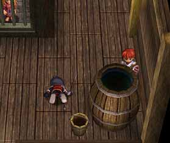

イース 6 -ナピシュテムの匣-
| 概要 | 情報 | ボス戦 |
| 穴場 | か･タマリ場 | 正統･穴場 |
| アイテム一覧 | 攻略チャート | 地図 |
| 敵キャラ一覧 | 変な写真 | Ys VI 攻略へ |
| 1 | 2 | 3 |
穴場･･･普通は、「一般的には知られていないが素晴らしい場所」という意味です。
しかし、このページの穴場はちょっと違います。
衝突判定の設定に”穴”がある場所・・・
そう、Falcomのプログラムスタッフには痛～い「穴場」です
ただし、サポートプログラムを使った場合の動作は保証しません。
|

ロムン戦艦内で、レダ族が捕まっている部屋です。ここのタルはごくまれに壁抜けが可能です。間違っても、レダ族を救出する前に 牢屋の中へ移動するのはやめましょう。 |
|
|
|
|
 左の画像の位置でジャンプし、右の画像のように出入り口の淵の上に着地で きれば成功です。後は自由に動き回ることができます。しかも、通路の敵を自 らは攻撃を受けることなく倒し、エメル回収までできてしまいます。 |
情報が入り次第、随時更新します。
| 1 | 2 | 3 |
| 概要 | 情報 | ボス戦 |
| 穴場 | か･タマリ場 | 正統･穴場 |
| アイテム一覧 | 攻略チャート | 地図 |
| 敵キャラ一覧 | 変な写真 | Ys VI 攻略へ |
YS VI -THE ARK OF NAPISHTIM-
イース 6 -ナピシュテムの匣-
| 目次へ戻る | ページの上部へ |